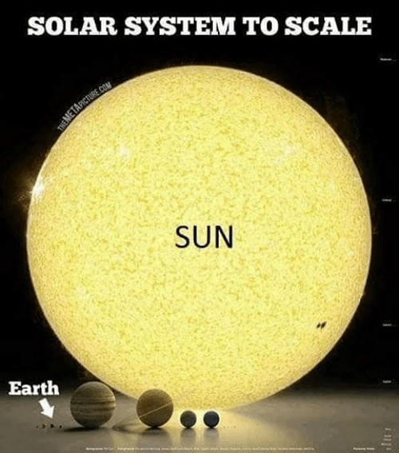

If I say “x appears to me…”, I may mean:
that x is present to me; before my eyes or mind; not hidden from view, as when I say
"That car just appeared right in front of me!"
that x looks to me a certain way, or has a certain outward “appearance”, as when I say
"The Sun is much larger than it appears."
x seems to me to be a certain way, I believe (but do not know) that x is a certain way, as when I say
"The restaurant appears to be closed."
APPEARANCE
REALITY 
If so, how can we avoid making false judgments when things are not as they appear?
x’s perceptual appearance is the way x “looks”, “feels”, or otherwise outwardly appears to a perceiver, e.g.:
If my perceptual experience corresponds to how things really are, my experience is veridical.
But if my perceptual experience does not correspond to how things really are, my experience is non-veridical.
We’ve seen that…
Which raises the question:
To have knowledge of some fact, e.g.:
that the interior angles of a triangle sum to 180 degrees that Istanbul is the largest city in Turkey,
a person must meet 3 conditions:
But why that name?
[I]f we take any common object of the sort that is supposed to be known by the senses, what the senses immediately tell us is not the truth about the object as it is apart from us, but only the truth about certain sense-data which, so far as we can see, depend upon the relations between us and the object…
Thus what we directly see and feel is merely “appearance,” which we believe to be a sign of some “reality” behind. But if the reality is not what appears, have we any means of knowing whether there is any reality at all ? And if so, have we any means of finding out what it is like? (23)
Units 1–2 explore Question 2 (and the Skeptical Conclusion) from two different perspectives:
(C) 2020 Robert Howton